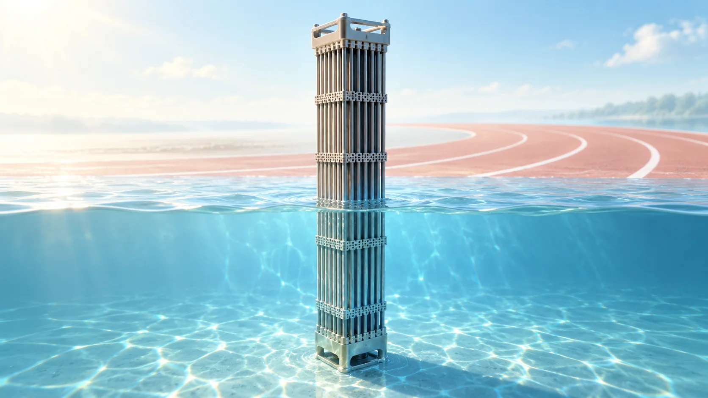
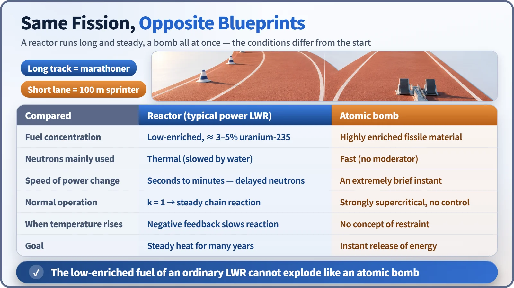
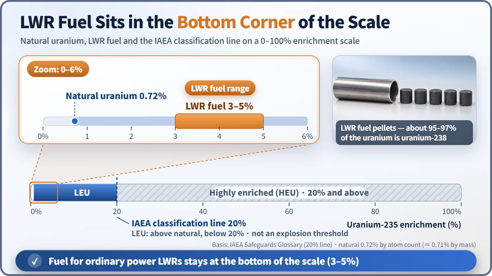

Nuclear Reactions & Fission · 049
The Marathoner and the 100-Meter Sprinter — How a Reactor's Chain Reaction Differs from a Bomb's
Same fission, opposite blueprints: a reactor holds a steady pace for decades, a bomb spends everything in an instant.

A reactor and an atomic bomb use the same fission chain reaction, but they are designed for opposite goals. A power reactor holds the reaction steady at k = 1 for decades, using low-enriched fuel, slowed neutrons, delayed neutrons and self-limiting feedback. That is why the low-enriched fuel of a power reactor physically cannot produce a nuclear explosion. [1]
Would you ask a marathoner for a 100-meter world record?
A marathoner who runs 42.195 km in a little over two hours is an incredible athlete. But ask them to set a 100-meter world record tomorrow, and the answer is obvious. Both events are running, yet the muscles, breathing and pacing are built differently from the start: one body is designed to run long and steady, the other to pour everything out in ten-odd seconds.
Reactors and bombs are like that. Both use fission chain reactions, but one is a marathoner holding a steady pace for decades and the other a sprinter spending everything in an extremely brief instant. The speed gap between the runners is not the actual ratio of reaction speeds; it compares what each was designed to do.
Same starting line: the chain reaction and k
When a uranium-235 nucleus splits, it releases about 200 MeV and 2–3 new neutrons, which can split other nuclei in turn. The multiplication factor k tells how many next-generation neutrons each generation leads to: at k = 1 the population holds steady, above 1 it grows. Up to here, reactor and bomb are the same. The difference is in the fuel, the neutrons and the designed pace.

Difference one: the fuel is diluted
Natural uranium contains only about 0.72% of the easily split uranium-235; nearly all the rest is uranium-238. Light-water reactors, the most common type of power reactor, use fuel enriched to about 3–5% uranium-235. Even so, about 95–97% of the uranium in the fuel is still uranium-238.
The International Atomic Energy Agency classifies uranium with less than 20% uranium-235 as low-enriched (LEU) and 20% or more as highly enriched (HEU). Power-reactor fuel sits far below that line, near the floor of the low-enriched range. [2]

Difference two: slow neutrons and late-born neutrons
A light-water reactor causes fission with thermal neutrons that water has slowed down, because in diluted fuel neutrons must be slowed before uranium-235 readily catches them. The water is the moderator.
Then comes a crucial time cushion. More than 99% of fission neutrons appear instantly, but about 0.65% (β ≈ 0.0065) are born an average of roughly 12–13 seconds later, after fission fragments decay. These delayed neutrons don't move slowly; they are born late. With prompt neutrons alone, one generation lasts about a ten-thousandth of a second; including delayed neutrons, the average stretches to around 0.1 second, about 1,000 times longer. Power changes therefore unfold over seconds to minutes, and operators and control rods can easily keep up. A reactor always operates in the range that depends on delayed neutrons. [3]
A reactor also goes slightly above k = 1 briefly when power is raised, so "supercritical means about to explode" is a misconception. The real boundary is prompt criticality, where the reaction grows on prompt neutrons alone. Reactors change power slowly, far below that line.
Difference three: it slows itself down when it heats up
When fuel temperature rises, uranium-238 absorbs more neutrons: the Doppler effect. Since most of the fuel is uranium-238, this brake works very well and acts fastest. When the water warms or boils and its density drops, moderation weakens and the reaction falls off too. Light-water reactors are designed so that both feedbacks reduce the reaction as temperature rises (negative feedback).
The core is also spread out: tens of thousands of fuel rods in water, in a space about 4 m tall and 3–4 m across. If energy starts to concentrate, the water boils and the structure changes, so the chain-reaction conditions break down first.
The sprinter is designed the opposite way
An atomic bomb is designed to use highly enriched fissile material and fast neutrons without a moderator, creating a strongly supercritical state in an extremely brief instant without waiting for delayed neutrons. A reactor with low-enriched fuel spread through water cannot create those conditions at all. The US Congressional Research Service and Atomic Energy of Canada Limited state it flatly: a reactor cannot explode like an atomic bomb. [4] [5]
So what were the explosions at Chernobyl?
The 1986 explosion at Chernobyl Unit 4 was not a nuclear explosion. As power surged, the core's cooling water flashed to steam all at once, and that steam explosion wrecked the reactor; a second explosion a few seconds later was possibly caused by hydrogen. The 2011 building explosions at Fukushima were hydrogen explosions. Not being nuclear explosions does not mean the damage was light; the causes and lessons belong to accident analysis. [6]
Key takeaways
A reactor and a bomb are different athletes at the same starting line. The reactor is a marathoner that holds a steady k = 1 pace with diluted fuel, slow neutrons, the time cushion of delayed neutrons and brakes it applies on its own.